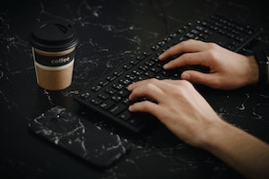

Keyboard
A keyboard is a device used for typing on a computer or other electronic device.
A keyboard is one of the primary input devices that allows users to input text into a computer or any other electronic machinery. It is a peripheral device that is the most basic way for the user to communicate with a computer. It consists of multiple buttons, which create numbers, symbols, and letters, and special keys like the Windows and Alt key, including performing other functions. The design of the keyboard comes from the typewriter keyboards, and numbers and letters are arranged on the keyboard in that way, which helps to type quickly.
The above keyboard design is called QWERTY design because of its first six letters across in the upper-left-hand corner of the keyboard. Although the keyboard design is derived from the typewrites, nowadays, it also includes many other keys as well as Alt/Option, Control, and Windows key can be used as shortcuts to perform the particular operation by combination with other keys. For example, if you press Control + S while working on a document in Microsoft Word, it will save the document you are working on. Furthermore, most of the keyboards have function keys (F1 to F12 or F16) at the top of the keyboard and arranged arrow keys in the downside used to perform numerous functions.